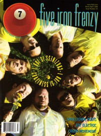
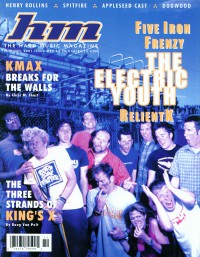

Five Iron Frenzy
 |
| November 1997 7ball |
 |
| March 1999 7ball |
 |
| November 2001 HM |
Media coverage:
- Fall 1996 in Garlic Press "Interview: Five Iron Frenzy"
- Jan 1997 in 7ball "Five Iron Frenzy"
- Jan 1997 in HM "Five Iron Frenzy", by Brian Vincent McGovern
- Jul 1997 in CCM "Catch The Wave", by Dave Urbanski
- Oct 1997 in CCM "In Concert: World Fest 3", by Scott Mathias
- Nov 1997 in 7ball "Five Iron Frenzy", by Dan MacIntosh
- Nov 1997 in HM "Five Iron Frenzy", by Joe Mendonca
- Feb 1998 in CCM "Fore", by Lou Carlozo
- Mar 1998 in Campus Life "In Other Ska News"
- Jul 1998 in HM "Concert Review: Morella's Forest, Plankeye, Five Iron Frenzy", by Val Sutton
- Jan 1999 in HM "Five Iron Frenzy", by Kimberly Hall
- Win 1999 in FUEL "It's Those Pants: The Fable of Five Iron Frenzy", by Chris Estey
- Mar 1999 in 7ball "Out To Save The World", by Nancy VanArendonk, Thompson Brooks
- Mar 1999 in Campus Life "Ska Mania!", by Mark Moring
- Nov 1999 in HM "Still Nuts After All These Years", by Brian Vincent McGovern
- Dec 1999 in CCM "In Concert: The Crush, Birmingham, AL", by David Mackle
- Jan 2000 in 7ball "Holy Rollin'", by Rachel L Martin
- May 2000 in HM "All the Hype Five Iron Can Bring", by John Sant
- Aug 2001 in CCM "All Access: Falling Forward", by Marcia Bartenhagen
- Nov 2001 in HM "A Tale Of Boogaloo And Varmint", by L Jeanette Strole
- Jan 2002 in CCM "On Tour: 328 Performance Hall, Nashville, TN", by Marcia Bartenhagen
- Jan 2003 in Charisma "People & Events: Scum of the Earth Outreach Touches Church Outcasts In Denver", by Margaret Feinberg
- 2003 in Cornerstone "Rocking The Back Nine", by John J. Thompson
- May 2003 in HM "Hardnews: End of the Road", by Doug Van Pelt
- Feb 2004 in CCM "Insider: Five Iron's Last Frenzy", by Lindsey Farrias
- Mar 2004 in HM "The End Is Over", by Shawn Dickinson, Christina Dickinson
- Mar 2007 in CCM "List-O-Rama: So Theatrical: 5 Christian Tracks That Get a Little Dramatic", by Chris Well
- Jan 2012 in HM "... Has Returned From the Grave", by Rob Shameless
- Mar 2012 in Relevant "2012 New Music Guide: Let's Hope People Just Miss Five Iron Frenzy"
- Jan 2013 in Relevant "The Revenge of Five Iron Frenzy", by Tyler Huckabee
- Jan 2013 in CCM Digital "Tour Spotlight: Reunion Weekend, Riviera Theatre, Chicago, IL", by Andy Argyrakis
- Nov 2013 in HM "Remember Us?", by Eric Petterson
- Oct 2014 in HM "The Jump: Columns: Bands Deserving of a Biopic", by Matt Francis
Albums & reviews:
1996: Upbeats and Beatdowns
1999: Proof That The Youth Are Revolting
2013: Engine of a Million Plots
- Nov 1996 in 7ball, by Chris Well
- Win 1996 in Garlic Press
- Jan 1997 in HM, by Brian Vincent McGovern
- Mar 1997 in YouthWorker, by Ty Chap Houge
- 1997 in Cornerstone, by David Canfield
- Jul 1997 in Campus Life
- Oct 1997 in Church Musician Today, by Al Menconi
- Fall 1996 in Garlic Press
- Win 1997 in Garlic Press
- Jan 1998 in CCM, by Brian Quincy Newcomb
- Jan 1998 in 7ball, by Bruce A. Brown
- Mar 1998 in YouthWorker, by Ty Chap Houge
- Mar 1998 in HM, by Brian Vincent McGovern
- Jan 1999 in CCM, by Lucas W. Hendrickson
- Jan 1999 in 7ball, by Brian Quincy Newcomb
- Jan 1999 in HM, by Brian Vincent McGovern
- Win 1999 in FUEL, by Jason Powers
- Jun 1999 in Church Musician Today, by Shannon Dietor-Hartley
1999: Proof That The Youth Are Revolting
- Jan 2000 in HM, by David M Pogge
- May 2000 in 7ball, by Dan MacIntosh
- May 2000 in Campus Life, by Martin Cockroft
- May 2000 in CCM, by David Mackle
- Jul 2000 in HM, by Gordon (a girl called)
- Jul 2000 in YouthWorker, by Dave Urbanski
- Nov 2001 in HM, by Treble Bandoppler
- Dec 2001 in CCM, by David McCreary
- Mar 2002 in YouthWorker, by Dave Urbanski
- May 2003 in HM, by Stephen Haislip
- Jul 2003 in CCM, by Ashton Brooks
- Nov 2003 in HM, by Kriss Stress
- May 2004 in HM, by Doug Van Pelt
- May 2004 in 7ball, by Aarik Danielsen
2013: Engine of a Million Plots
- Nov 2013 in HM, by Robert Houston
- 1 Jan 2014 in CCM Digital, by Andy Argyrakis
Award Summary (Nominations / Wins)
Dove Awards- 1998 Dove Awards
- Short Form Music Video: "A Flowery Song"
Books about Five Iron Frenzy
- "Five Iron Frenzy" in The Encyclopedia of Contemporary Christian Music (Mark Allan Powell, 2002)
- "Five Iron Frenzy" in The Billboard Guide to Contemporary Christian Music (Barry Alfonso, 2002)
External Links

© 2011 CMnexus. Last updated September 2019. Contact: editor -AT- cmnexus -DØT- org About